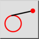
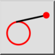
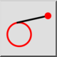
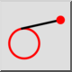

Tangente (Ponto, Círculo)
Barra de ferramentas / Ícone:
 

Menu: Desenhe > Linha > Tangente (Ponto, Círculo)
Atalho: L, T, 1
Comandos: linetangent | tangent | lt1
Esta é uma tradução automática.
Barra de ferramentas / Ícone:
 

Menu: Desenhe > Linha > Tangente (Ponto, Círculo)
Atalho: L, T, 1
Comandos: linetangent | tangent | lt1
Criar tangentes de uma coordenada para uma entidade de arco, círculo ou elipse existente com esta ferramenta.